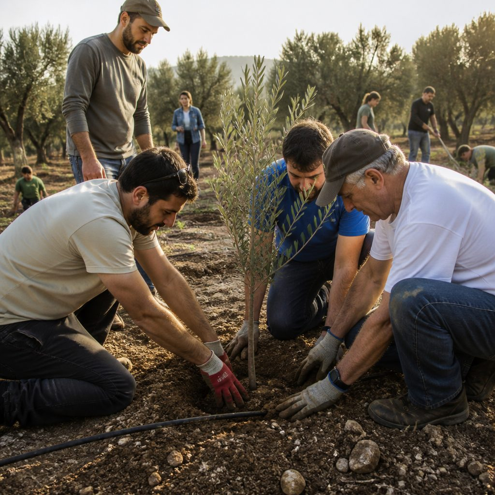

מי אנחנו
מיזם בשבילנו נוצר כדי לבנות את הגשר בין הזיכרון בישראל לקהילות היהודיות בעולם.
תכלית המיזם היא לחזק את הקשר בין ישראל ליהודי התפוצות — באמצעות הרחבת מעגל הזיכרון והצמיחה של מיזמי ההנצחה של הנופלים אל תוך הקהילות היהודיות בעולם.
שנות האתגר של יהדות התפוצות
בין ערבות הדדית היסטורית לבין גל אנטישמיות עולמי
מתוך השבר — הבחירה לצמוח
משפחות שכולות רבות בחרו לזכור וליצור חיים חדשים.
משפחות של הגיבורים הקימו עשרות מיזמים של זיכרון וחיים לזכר יקיריהן — רבים מהם נועדו לסייע לצמיחת החברה הישראלית ולתקומתה של המדינה, דווקא מתוך המחיר הנורא מכל.

עוצמות של חיים
המיזמים פרושׂים על פני כל תחומי החיים
מי אנחנו
גוף מקשר, מלווה ומסבסד
שותפות במשולש
שלושה צדדים, שביל אחד
משמעות כפולה לשם "בשבילנו"
עבורנו הם לחמו ושילמו בחייהם. עבורנו נוצרו מיזמים חדשים לזכרם, שיהפכו את ישראל למקום טוב יותר.
המסע בנתיב חייהם, ההתחקות אחר ערכיהם והעשייה במיזם שמנציח אותם, הוא מסע בשביל חדש ומשותף של קהילות התפוצות וישראל — שביל שמחזק שותפות וחוסן בישראל הצומחת מהשבר ובאתגרי העולם היהודי.
נושיט יד, נצטרף ונרחיב את מעגל העשייה — עבורם ובשבילנו.
רוצים להבין איך זה עובד בפועל?
מהשלב הראשון של בחירת מיזם ועד לשותפות פעילה — הכול בעמוד אחד.